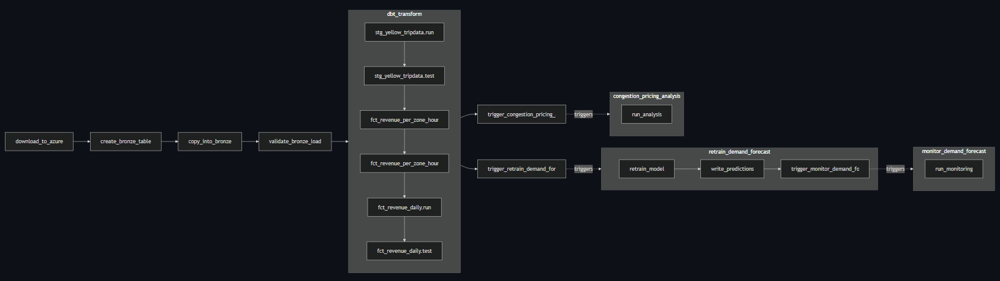
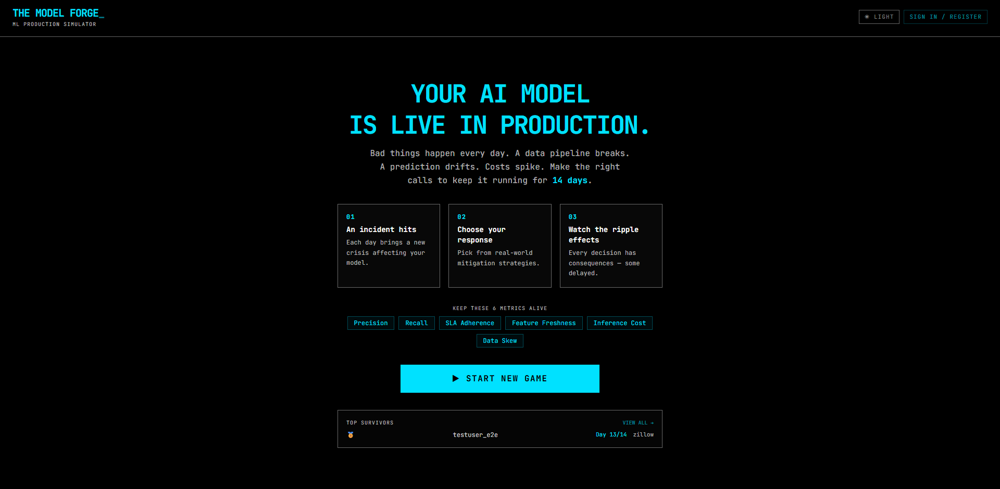

Airflow
Azure Blob
Snowflake
dbt
LightGBM
MLflow
Superset
End‑to‑end NYC Yellow Taxi analytics pipeline: automated monthly ingestion (Airflow → Azure Blob → Snowflake), dbt transformations (medallion bronze→silver→gold), LightGBM demand forecasting + DiD congestion pricing analysis, model monitoring in MLflow, and Superset dashboards for KPIs and heatmaps.

Pipeline DAG (Airflow / dbt / retrain flow).

Superset dashboard overview + MLflow experiment tracking (image from repo).
MLOps
Model Deployment
Drift Detection
TypeScript
PostgreSQL
The Model Forge is a turn-based machine learning production simulator where you manage a live model through 14 days of incidents, tradeoffs, and operational pressure. Balance precision, recall, cost, freshness, and SLA adherence as you make high-stakes decisions, protect your production pipeline, and aim for the strongest final score. The platform includes account creation, password recovery, save/load, and a public leaderboard, all backed by a contract-first API, PostgreSQL, and a secure monorepo architecture.

LightGBM
SHAP
Scikit-learn
Class Imbalance
Model Calibration
End-to-end machine learning solution for predicting loan default risk on the Home Credit dataset (307k+ applications). Built and optimized a LightGBM model achieving 0.7567 AUC, addressing severe class imbalance (8% default rate, 11.39:1 ratio) through ensemble methods and scale-based weighting. Applied isotonic calibration to improve model reliability (63.38% Brier score reduction). Integrated SHAP explainability for interpretable, production-ready risk assessment. Delivered business impact: $7.3M savings vs. approve-all baseline (13.9% reduction) while maintaining 86.42% approval rate. Includes preprocessing pipeline, feature engineering, threshold optimization, and comprehensive deployment artifacts.
LangChain
LangGraph
Ollama (Llama 3.1 8B)
MLflow
PyTorch
Chroma vector database
FastAPI
Streamlit
SQLite
ATHENA (Adaptive Training & Hyperparameter Exploration Natural Assistant) is a production-ready
agentic MLOps platform that combines conversational AI with comprehensive ML lifecycle management.
The platform enables ML engineers to interact with their experiments using natural language, eliminating
the need for manual dashboard navigation and complex query syntax. The platform features a ReAct
agent built with LangChain and LangGraph for autonomous task execution, MLflow integration for
comprehensive experiment tracking, and Chroma vector database for semantic search over experiments.
Designed with edge AI in mind, ATHENA provides intelligent recommendations for model quantization, pruning,
and latency optimization suitable for deployment on resource-constrained devices like Jetson Nano and mobile
platforms.
PostgreSQL
Redis
RESTful API
JWT Authentication
Query Optimization
Time-Series Analysis
Financial Analysis
Built an end-to-end financial trading simulation platform processing real-time market data for 10,000+ assets. Designed data
pipelines with multi-tier caching (Redis + PostgreSQL), cutting API latency by 90% and enabling high-throughput analytics.
Developed RESTful APIs with JWT authentication and input validation for real-time portfolio, ROI, and risk
analytics. Designed PostgreSQL data models optimized for query speed (<100ms) and efficient time-series analysis.
Created interactive dashboards in React for portfolio insights and performance visualization.
Python
OpenAI, Anthropic APIs
SQLite
Shopify, Google Ads, Meta Ads, Klaviyo APIs
Scikit-learn, Plotly
Built an end-to-end agentic AI system implementing plan -> act -> observe loops for autonomous e-commerce campaign
management. The agent analyzes customer data via Shopify and Google Analytics APIs for segmentation, auto-generates
creatives and targeting configs, and deploys campaigns across Google Ads, Meta, and email platforms. Developed a
comprehensive evaluation harness with offline replay testing, slice analysis, and safety guardrails. Achieved 23% ROAS
improvement and 67% operational overhead reduction versus manual management.
Ecommerce Agent Demo
Interactive demo would include:
- Real-time agent decision-making process
- Customer segmentation visualizations
- Generated campaign creatives and targeting
- Performance metrics and ROI calculations
- Campaign optimization history
- System logs and reasoning chains
Click "GitHub" to see the full implementation
Python
Steam API
Random Forest
XGBoost
PostgreSQL
Engineered churn prediction models using Steam Web API, PostgreSQL, and 50K+ player records,
achieving 89% precision with Random Forest/XGBoost. Implemented statistical hypothesis testing,
time-series feature engineering, and cohort analysis in Python. Generated actionable retention
strategies, potentially reducing churn by 15% and increasing player LTV by $12 per user.
Churn Prediction Model Demo
Interactive demo would include:
- Player behavior input form
- Real-time churn probability calculation
- Feature importance visualization
- Model performance metrics
- Cohort analysis dashboard
Click "GitHub" to see the full implementation
Web Scraping
ML Classification
API Integration
BeautifulSoup
Folium
This project aims to predict the success of a SpaceX Falcon 9 first stage landing, which
directly impacts launch costs. The process involves multiple steps: data collection from a
Wikipedia page via web scraping using Python BeautifulSoup and from the SpaceX API, followed
by data wrangling and analysis using various tools like SQL, Pandas, Matplotlib, and Folium.
Finally, four supervised machine learning models (Support Vector Machine, Decision Tree,
K-Nearest Neighbours, and Logistic Regression) are trained and their accuracy is evaluated to
find the best model for predicting successful landings.
Landing Prediction Tool
Prediction interface would include:
- Launch parameters input form
- Success probability prediction
- Historical launch data visualization
- Cost savings calculator
- Interactive landing site maps
Model comparison and accuracy metrics included
TF-IDF
K-Means
Random Forest
PCA
Pandas
Engineered a hybrid ML pipeline processing the Flipkart e-commerce dataset with statistical
validation and predictive modeling for product recommendations. Implemented TF-IDF
content-based filtering, K-Means clustering with silhouette analysis, and Random Forest
classification, achieving 87% F1-score. Applied hypothesis testing, data validation techniques,
and PCA visualization to translate business problems into technical solutions, potentially
increasing conversion rates by 18%.
Recommendation Engine Demo
Interactive features would include:
- Product search and selection
- Similar products recommendation
- User-based collaborative filtering
- Recommendation confidence scores
- A/B testing for recommendation algorithms
Full implementation available on GitHub